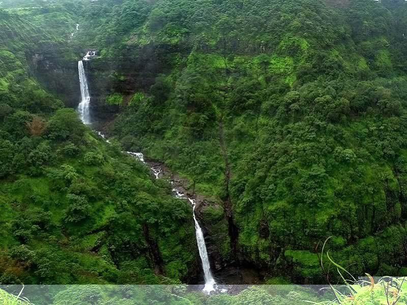

Mahabaleshwar Weekend Tour N0 2
Day 01: Mumbai - Mahabaleshwar (300 kms) : Departure early in the Morning to Alibaug (145 Km from Mumbai & 148 Km from Pune)on arrival visit to Kulaba Fort in the Sea.Then Proceedto Aksa, Nagaon beach,Sasawane beach,Varsoli beach,Revdanda port & Kihim beach evening return to Alibaug. Evening at Alibaug beach & o/n halt.Meet on arrival at Mumbai Airport / Railway station and drive to Mahableshwar. On arrival check-in at hotel. Evening free for your own activity. Overnight stay at the hotel. Mahabaleshwar means 'God of Great Power' in Sanskrit. Indeed, the place is great and bountiful, rewarding the visitor with a mix of old-world charm, natural beauty and modernity.
Day 02: Mahabaleshwar: After breakfast full day city tour of Mahabaleshwar covering Wilson Point – A wonderful spot to enjoy spectacular sunrise and sunset views, three observation towers provide splendid views of the valleys around. Arthur's Seat – Also known as the Queen of all Points, it is the best place to get impressive views of the Jor Valley. The spot also provides enchanting views of the valleys and is a great place to spend time.
Lingmala WaterfallsMahabaleshwar is home to some extremely charming waterfalls. The Lingmala Falls atop the Venna Valley is extremely picturesque as the water cascades down almost 600 ft.
Old Mahabaleshwar TempleThe town is said to derive its name from Lord Mahabali or Shiva, who is shown here as a self-made lingam in the shape of a rudraksha seed. It is also believed that a spring flows below the shivling.
Panchaganga TempleA unique temple with five stone conduits, it is believed to be fed by waters flowing from five holy rivers Krishna, Venna, Koyna, Savitri and Gayatri. These streams of water further join into the cow-face spout. The River Ganga is also believed to flow here once every 12 years.